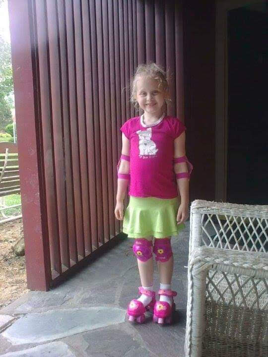

About Me
Hello, my name is Emma Grace Ebeling, AKA Ege (ee-juh).

Credentials
- B.A. in Games and Interactive Media
- Focus Area in Game Design
- B.A. in Information Science
- Focus Area in Human-Centered Design
- Minor in Korean
- Resident Assistant
- Student Supervisor
- Dean's List: Fall 2021, fall/spring 2022, fall/spring 2023, fall 2024
- MSU Designathon Overall winner and Gamified category winner
A Little About Me
I'm a fifth year student at Michigan State University with a dual major and a minor. My credentials are listed above. Most of my work is focused in human-centered media design. My work usually centers user experience in game design, web development, and social media content. I really enjoy reading fantasy, traveling, learning new things, and riding my motorcycle.
I use research-based methods to iterate and improve on my work as well as clients' work.
Some Work I've done
- Ran a social media account for a local baker
- Created a prototype website for a local computer store
- Level designed for a game development club
- Created multiple in-depth game design documents for various games
- Reskinned a platformer
- Conducted field research for various apps to understand and improve user experience
- Used free and paid, professional software to iterate and problem solve multiple design solutions